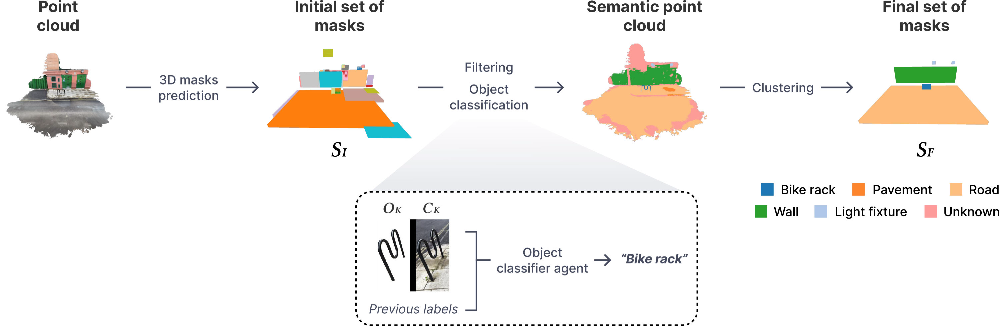
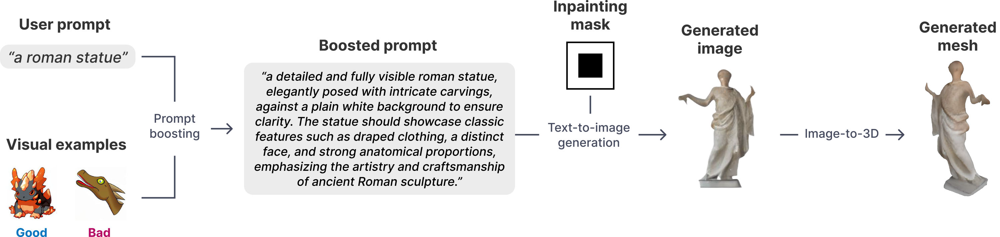
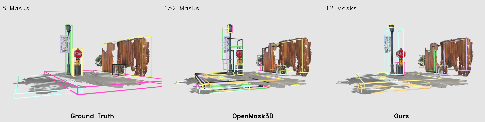
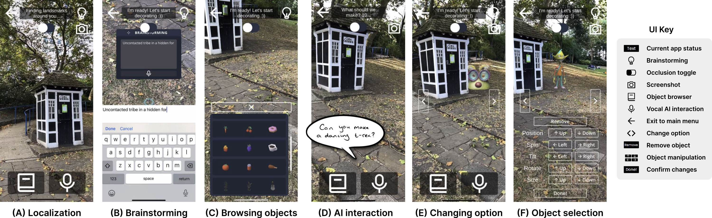
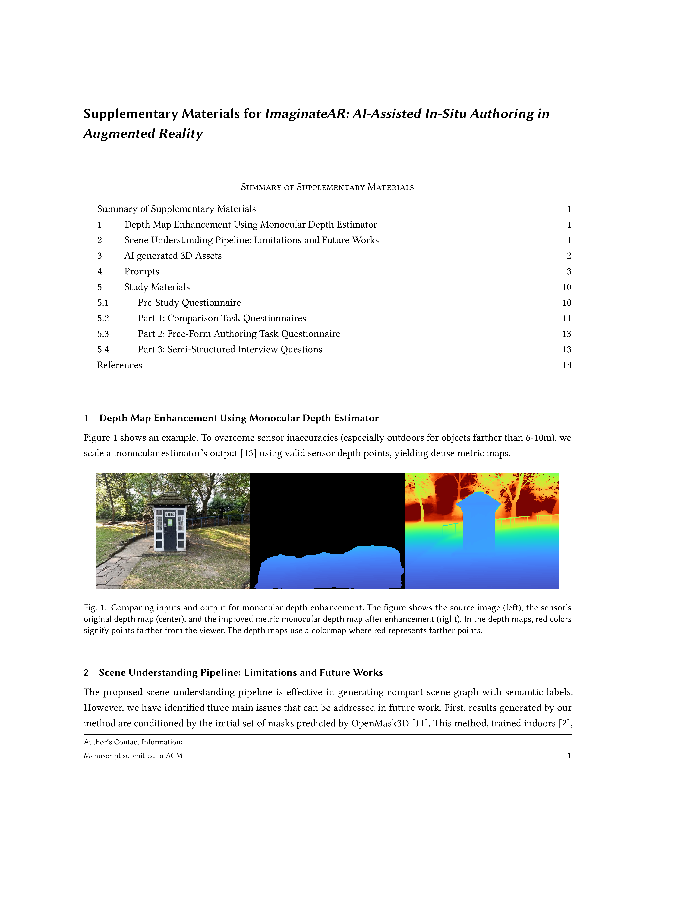

While augmented reality (AR) enables new ways to play, tell stories, and explore ideas rooted in the physical world, authoring personalized AR content remains difficult for non-experts, often requiring professional tools and time. Prior systems have explored AI-driven XR design but typically rely on manually defined VR environments and fixed asset libraries, limiting creative flexibility and real-world relevance. We introduce ImaginateAR, the first mobile tool for AI-assisted AR authoring to combine offline scene understanding, fast 3D asset generation, and LLMs—enabling users to create outdoor scenes through natural language interaction. For example, saying “a dragon enjoying a campfire” (P7) prompts the system to generate and arrange relevant assets, which can then be refined manually. Our technical evaluation shows that our custom pipelines produce more accurate outdoor scene graphs and generate 3D meshes faster than prior methods. A three-part user study (N=20) revealed preferred roles for AI, how users create in freeform use, and design implications for future AR authoring tools. ImaginateAR takes a step toward empowering anyone to create AR experiences anywhere—simply by speaking their imagination.
We first showcase AR scenes authored using ImaginateAR. These include 6 scenes created by the research team for the purposes of proof by demonstration, as well as 24 scenes authored by the participants in our user study (N=20 + 4 pilot) during a free-form authoring phase.


ImaginateAR integrates three technical innovations: (1) Outdoor scene understanding using enhanced OpenMask3D with GPT‑4o semantic labeling and HDBSCAN clustering to build structured scene graphs; (2) Fast 3D mesh generation via GPT‑4o prompt expansion, reference image synthesis, segmentation (DIS) and mesh lifting (InstantMesh); (3) LLM‑driven speech interaction, enabling users to place and refine assets through natural spoken commands in real time.



We evaluated ImaginateAR through a technical assessment and a three-part user study (N=20) in a public park. Our scene understanding pipeline outperformed the base OpenMask3D model and ablated variants, while our asset generation pipeline matched state-of-the-art quality with a faster, sub-minute runtime. The user study included: a comparison task across three authoring modes—manual, AI-assisted, and AI-decided—to explore control vs. automation (Part 1); a free-form phase where participants designed their own AR experiences (Part 2); and a co-design session reflecting on AI’s role and envisioning future features (Part 3). Overall, participants enjoyed creating diverse AR scenes and favored a hybrid approach—using AI for rapid, creative generation while retaining manual control for customization. Examples of both research team–created and user-authored scenes appear earlier on this page. For more details, please see our paper.




If you find this work useful for your research, please cite:
@inproceedings{lee2025imaginatear,
author = {Lee, Jaewook and Aleotti, Filippo and Mazala, Diego and Garcia‑Hernando, Guillermo and Vicente, Sara and Johnston, Oliver James and Kraus‑Liang, Isabel and Powierza, Jakub and Shin, Donghoon and Froehlich, Jon E. and Brostow, Gabriel and Van Brummelen, Jessica},
title = {ImaginateAR: AI‑Assisted In‑Situ Authoring in Augmented Reality},
year = {2025},
isbn = {9798400720376},
publisher = {Association for Computing Machinery},
address = {New York, NY, USA},
url = {https://doi.org/10.1145/3746059.3747635},
doi = {10.1145/3746059.3747635},
booktitle = {Proceedings of the 38th Annual ACM Symposium on User Interface Software and Technology},
location = {Busan, Republic of Korea},
series = {UIST '25},
}
We thank the ImaginateAR research team and study participants. ImaginateAR builds on earlier work by many of the same authors (e.g., CoCreatAR). Specific funding and acknowledgements are referenced in the full preprint.
© This webpage was inspired by this template.